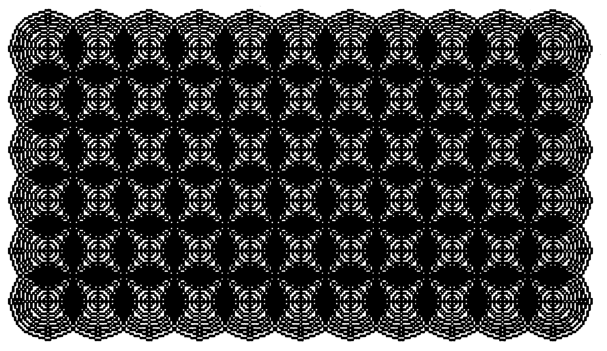
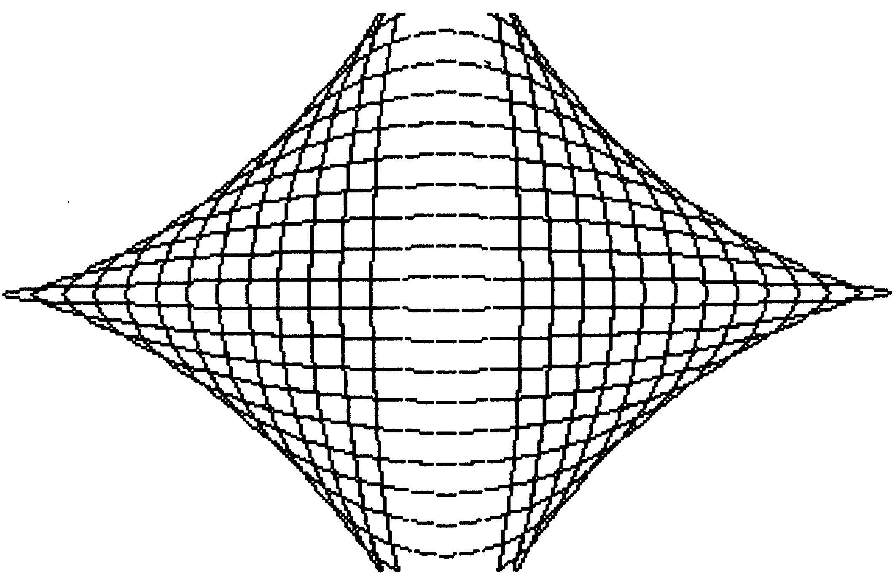

Die schnellste Grafikerweiterung für den C 64
Die Basic-Erweiterung für den C 64, die in Sachen Geschwindigkeit völlig neue Maßstäbe setzt.

Für alle Fans von hochauflösenden Grafiken auf dem C 64 bietet diese extrem schnelle Grafikerweiterung eine neue Alternative. Sie enthält die schnellsten Grafik-Routinen, die uns bisher in einer Basic-Erweiterung unter die Augen gekommen sind und bietet dem Basic-Programmierer so eine Fülle von neuen Möglichkeiten. Die Grafik in Bild 1 wird beispielsweise in weniger als 2 Sekunden aufgebaut. Auch das Bild oben zeigt eine sehr schöne Grafik, die mit der High-Speed-Grafikerweiterung erstellt wurde.

Bei der High-Speed-Grafikerweiterung handelt es sich um eine Basic-Erweiterung, die auf einem extrem schnellen Algorithmus für das Zeichnen einer Linie aufbaut (ein Algorithmus ist ein programmtechnischer Lösungsweg für ein mathematisches Problem). Dieser Weg wurde unter anderem auch in der 64'er-Ausgabe 4/1984, Seite 65 (»schneller Drawline-Algorithmus«) aufgezeigt und stellt die schnellste, derzeit bekannte Methode für das Zeichnen einer Linie zwischen zwei Punkten dar.
Der in der High-Speed-Grafikerweiterung verwendete Algorithmus erlaubt das Ziehen von Linien mit einer Geschwindigkeit von fast 12000 Punkten pro Sekunde. Das entspricht einer Zeit von weniger als 90 Mikrosekunden für das Setzen eines Punktes und erlaubt somit das Zeichnen einer Linie ohne sichtbare Verzögerung.
Wichtig im Zusammenhang mit der Grafikerweiterung ist jedoch die Tatsache, daß nur im hochauflösenden Grafikmodus und nicht im Multicolor-Modus gearbeitet werden kann. Das Programm eignet sich also hervorragend für »ernsthafte« Anwendungen, in der zeitkritische Problemlösungen gefragt sind.
Nun aber zum Programm selbst. Es belegt im Computer den Speicherbereich von $9000 bis $9C60 (36864 bis 40032). Insgesamt wird mit zwei Grafikbildschirmen gearbeitet, zwischen denen beliebig hin- und hergeschaltet werden kann. Sie belegen den Bereich ab $A000 bis $BFFF und $E000 bis $FFFF. Die zugehörigen Farbspeicher liegen dazu ab $8C00 und ab $CC00. Da zwei Farbspeicher verwendet werden, entfällt das lästige und zeitraubende »Umschaufeln« von Farbwerten, was wiederum einen Geschwindigkeitsvorteil bringt. Durch das geschickte Umschalten zwischen beiden Grafikbildschirmen können nämlich absolut flimmerfreie, bewegte Grafiken auch in Basic erstellt werden.
Wenn Sie sich die Verteilung der Speicherbereiche ansehen, werden Sie feststellen, daß immerhin noch 33 KByte Speicher für eigene Basic-Programme freibleiben.
Nach dem Abtippen der High-Speed-Grafikerweiterung (Listing 1) mit dem MSE wird das Programm mit dem Namen »HSG-W« auf einer Diskette gespeichert. Sinngemäß kann es anschließend wieder mit »LOAD "HSG-W",8,1« in den Computer geladen werden. Anschließend erfolgt der Start mit »SYS 9*4096« oder »SYS 36864«, wobei vorher noch der Befehl <NEW> einzugeben ist, damit die Basic-Zeiger wieder hergestellt werden. Ansonsten ist früher oder später ein »?OUT OF MEMORY ERROR« die Folge.
Nach der Einschaltmeldung der Erweiterung steht Ihnen sofort ein sehr leistungsfähiger Befehlssatz zur Verfügung. Wird das Grafikpaket von einem Basic-Programm nachgeladen, so unterbleibt die Einschaltmeldung, und der Befehlssatz steht direkt zur Verfügung. Beim Starten der Erweiterung werden automatisch alle beiden Grafikbildschirme gelöscht und die Hintergrundfarbe auf Schwarz gesetzt. Die Vordergrundfarbe, also die Farbe der gezeichneten Figuren, steht dann auf Weiß.
Im folgenden sei nun der neue Befehlssatz der High-Speed-Grafikerweiterung beschrieben. Das Kennzeichen der erweiterten Befehle ist das Pfundzeichen ('£'), das jedem Befehlsbuchstaben vorangestellt ist. Eine Besonderheit der Befehlserweiterung sei an dieser Stelle auch gleich erwähnt: Wird ein Grafikbefehl in einer IF-THEN-Unterscheidung benötigt, so muß zwischen dem Befehl »THEN« und dem Grafikbefehl ein Doppelpunkt <:> gesetzt werden.
Für die Befehlserklärung vorab ein paar Hinweise auf Abkürzungen, die im weiteren Verlauf des Textes verwendet werden:
SCR: bedeutet die Nummer des gewünschten Grafikbildschirms. Eine Null (0) steht für den Bildschirm 0, eine Zahl zwischen 1 und 255 steht für den Grafikschirm 1.
ZM: bedeutet Zeichenmodus. Hier wird die Betriebsart der Zeichenroutinen bestimmt. Dabei bedeutet eine 0 ein Zeichnen in der Hintergrundfarbe, was einem Löschen der Punkte entspricht. Eine Zahl ungleich 0, nämlich von 1 bis 255, bedeutet ein Zeichnen in der aktuellen Vordergrundfarbe. Hier werden die Punkte sichtbar auf dem Bildschirm angezeigt.
X: steht für die X-Koordinate eines Befehls im aktuellen Grafikbildschirm. Der Wert kann zwischen 0 und 319 betragen.
Y: steht für die Y-Koordinate des betreffenden Befehls. Sie kann Werte zwischen 0 und 199 annehmen.
R: gibt den Kreisradius bei Kreisbefehlen an. Hier ist ein Wert zwischen 0 und 255 zulässig.
V: steht für eine beliebige Fließkommavariable, die an dieser Stelle im Programm eingesetzt werden muß.
V$: ersetzt in der Befehlstabelle eine beliebige Stringvariable, die in eigenen Programmen natürlich einen anderen Namen haben kann.
| Befehl | Parameter | Ausführung |
|---|---|---|
| £H | ,SCR | Grafikbildschirm einschalten |
| £E | ,SCR | Grafikbildschirm löschen |
| £C | ,SCR,F | Farbe für Bildschirm setzen |
| £N | Textbildschirm einschalten | |
| £P | ,X,Y,ZM | Punkt im Grafikbildschirm setzen |
| £S | ,X,Y | Grafik-Cursor setzen |
| £D | ,X,Y,ZM | Linie ab Cursor-Position ziehen |
| £L | ,XA,YA,XB,YB,ZM | Linie von festgelegter Position bis zu fester Position ziehen |
| £R | ,XA,YA,XB,YB,ZM | Rechteck zeichnen |
| £B | ,XA,YA,XB,YB,ZM | ausgefülltes Rechteck zeichnen |
| £K | ,XM,YM,RX,RY,ZM | Kreis zeichnen |
| £M | ,SCR | Grafikseite für Befehle anwählen |
| £IS | ,YG,YT | Rasterzeilen setzen |
| £I1 | Text in Grafik einblenden | |
| £I0 | Text aus Grafik ausblenden | |
| £V | ,V,V$ | String auswerten |
| £QA | Grafikseiten durch UND verknüpfen | |
| £QO | Grafikseiten durch ODER verknüpfen |
Hier nun die Beschreibung sämtlicher Befehle der High-Speed-Grafikerweiterung für den C 64:
£H,SCR: Dieser Befehl schaltet den Grafikbildschirm ein, dessen Nummer anstelle von »SCR« angegeben wird.
£E,SCR: Mit diesem Befehl wird der Grafikbildschirm mit der angegebenen Nummer »SCR« gelöscht, das heißt, gleich der Hintergrundfarbe gesetzt.
£C,SCR,F: Hier wird die Farbe des angegebenen Grafikbildschirms gesetzt. Dabei geht man folgendermaßen vor:
F = Hintergrundfarbe + 16*Vordergrundfarbe.
Wollen Sie also beispielsweise die Standardfarbenkombination von Schwarz als Hintergrund- und Weiß als Vordergrundfarbe einstellen, so errechnet sich der Wert für F wie folgt: 0 + 16*1 ergibt 16, da 0 die Farbe Schwarz und 1 die Farbe Weiß einstellt.
£N: Dieser Befehl ist wohl einer der wichtigsten. Er schaltet wieder auf den normalen Textbildschirm zurück, wobei sämtliche Parameter der zwei Grafikbildschirme und des Textbildschirms erhalten bleiben.
£P,X,Y,ZM: Mit diesem Befehl wird ein Punkt im aktuellen Grafikbildschirm gesetzt, beziehungsweise gelöscht (abhängig von ZM). X und Y geben dabei die entsprechenden Bildschirmkoordinaten an.
£S,X,Y: Hier wird der aktuelle Grafik-Cursor (Zeichenposition im Grafikbildschirm) an die Koordinaten X und Y gesetzt.
£D,X,Y,ZM: Dieser Befehl zieht eine Linie von der Position des aktuellen Grafik-Cursors bis zu den Koordinatenpunkten X und Y. Abhängig von ZM wird diese Linie dabei gezeichnet oder gelöscht.
£L,XA,YA,XB,YB,ZM: Der Befehl entspricht D, nur mit dem Unterschied, daß hier sowohl die Anfangs- (XA,YA) als auch die Endkoordinaten (XB,YB) der Linie angegeben werden müssen.
£R,XA,YA,XB,YB,ZM: Mit diesem Befehl können Sie ein Rechteck auf den Bildschirm zeichnen, dessen linke obere Ecke durch die Koordinaten XA und YA und dessen rechte untere Ecke durch die Koordinaten XB und YB bestimmt wird.
£B,XA,YA,XB,YB,ZM: Dieser Befehl entspricht im wesentlichen dem Befehl R. Es handelt sich bei der gezeichneten Figur hier jedoch um ein ausgefülltes Rechteck, einen Block.
£K,XM,YM,RX,RY,ZM: Mit diesem Befehl wird ein Kreis gezeichnet, dessen Mittelpunkt bei den Koordinaten XM und YM liegt, und dessen Radius in X-Richtung durch den Parameter RX und in Y-Richtung durch RY angegeben wird. Auf diese Weise ist es auch ohne Probleme möglich, Ellipsen auf den Bildschirm zu bringen, indem ungleiche Werte für RX und RY angegeben werden. ZM bezeichnet wie üblich den Zeichenmodus, der bestimmt, ob die Figur in Vorder- oder Hintergrundfarbe auf den Bildschirm gebracht wird.
£M,SCR: Hier wird diejenige Grafikseite angewählt, auf die sich die künftigen Befehle beziehen sollen. Es ist somit möglich, eine Grafikseite vorzubereiten, während die andere Seite angezeigt wird.
£IS,YG,YT: Dieser Befehl setzt die Umschaltzeilen für Text- und Grafikanzeige. Es handelt sich dabei um einen Rasterinterrupt, der das gleichzeitige Anzeigen von Text und Grafik erlaubt. YG gibt dabei die Rasterzeile für das Einschalten der Grafik und YT die Rasterzeile für den Beginn des Textfensters an. Eine Angabe von £IS,10,120 schaltet also den Bildschirm zwischen den Punktzeilen 10 und 119 auf Grafik. Der Rest ist Textbildschirm.
£I1: Hier erfolgt ein Einblenden des Textbildschirms in den aktuellen eingeschalteten Grafikbildschirm, sofern vorher durch den Befehl £IS die entsprechenden Rasterzeilen festgelegt worden sind. Im oben aufgeführten Beispiel von £IS,10,120 wird also in der Mitte des Bildschirms die Grafik angezeigt, während am oberen und unteren Rand jeweils ein Teil vom Textbildschirm zu sehen ist. Voraussetzung ist natürlich, daß vor dem $I1-Befehl immer der aktuelle Grafikschirm mit dem H-Befehl eingeschaltet worden sein muß.
£I0: ist das genaue Gegenstück zum £I1-Befehl. Hier wird das Textfenster wieder aus dem Grafikbildschirm ausgeblendet, so daß das aktuelle Grafikfenster wieder in seiner vollen Größe erscheint.
£V,V,V$: Dieser Befehl erlaubt die Auswertung eines mathematischen Ausdrucks in einem String. Dazu ein Beispiel:
10 A$="100+200-75"
20 £V,A,A$
30 PRINT A
Dieses Programm wertet den String A$ aus und übergibt das Ergebnis in A. Auf dem Bildschirm erscheint als Ergebnis der Wert 225.
£QA: Hier werden die beiden Grafikseiten durch ein logisches UND miteinander verknüpft. Dadurch ist eine subtraktive Mischung von zwei Grafiken problemlos möglich.
£QO: Ähnlich dem £QA-Befehl, nur daß hier eine ODER-Verknüpfung stattfindet. Die beiden Grafikbildschirme werden also additiv gemischt, wobei ein »Zusammenschneiden« von zwei Grafiken möglich ist.
Soweit zum Befehlssatz der High-Speed-Grafikerweiterung. Wie Sie sehen, erhalten Sie mit diesem zusätzlichen Befehlssatz ein wirklich leistungsfähiges Grafik-Basic, das sich für viele Anwendungen hervorragend eignet. Wenn Sie sich einmal die Mühe machen und eines von den beiden Demo-Programmen in Listing 2 und 3 eintippen, bekommen Sie eine recht eindrucksvolle Vorstellung davon, wie schnell High-Speed-Grafik arbeitet.
(Wolfgang Lohwasser/ks)